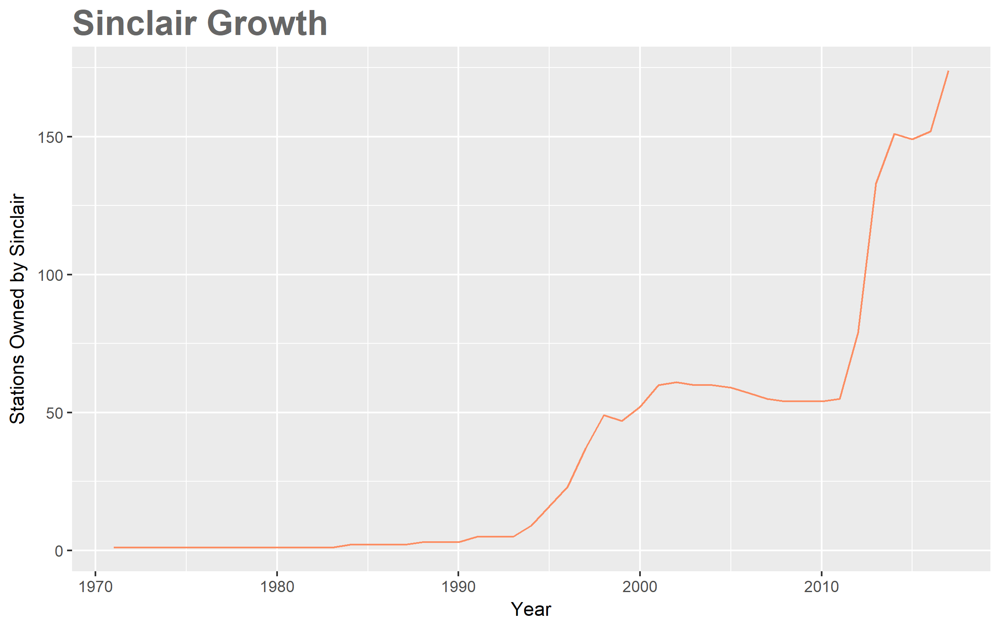
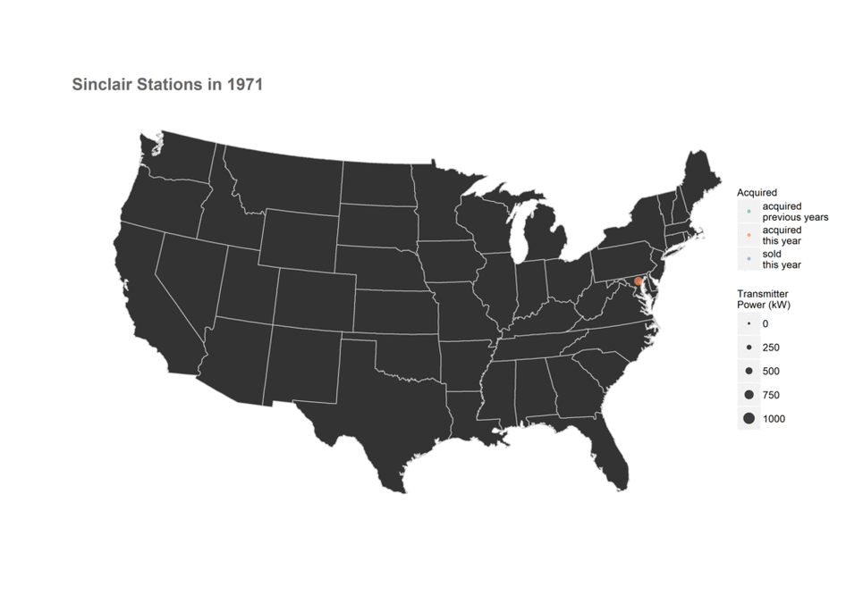
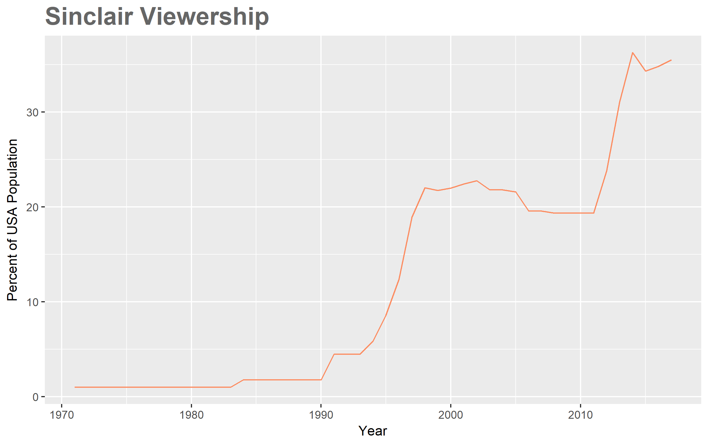
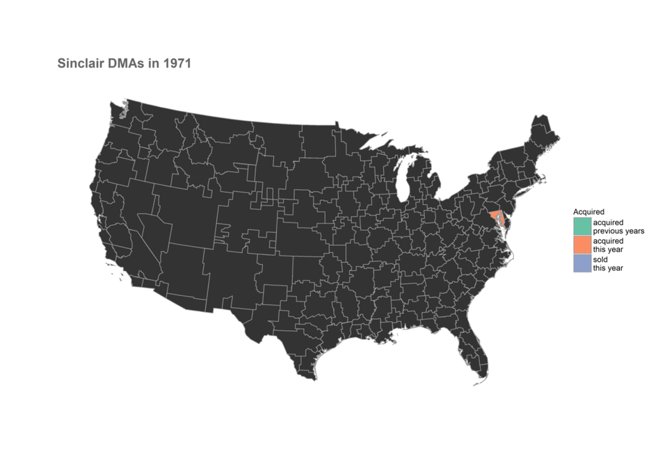

Introducing the Sinclair Broadcast Group
This post is the first in a three part series on the Sinclair Broadcast Group. I will be posting links to the second and third parts here once I finish them.
I skim over a lot of technical work in this post. If you want to see the code that generated the graphs I show, try looking through this notebook on Sinclair stations or this notebook on DMAs and how they apply to Sinclair .
Introducing the Sinclair Broadcast Group
Do you remember broadcast television? Yes, that ancient technology the internet completely replaced like 10 years ago? Oh boy, those were the days. Saturday morning cartoons; watching How It's Made episodes about styrofoam; local news stories about that one guy who tried to sell himself on eBay. Today, of course, it's pretty obvious that Facebook and Twitter have completely supplanted TV's role as ...
What's that?
Only the younger population is watching less TV? People 40 and over watch about as much TV today as they did 5 years ago? Traditional TV still makes up the single largest video consumption source in the US?1
Yup! Even in the age of social media, millions of American still get their entertainment and news from sources other than tweets and newsfeeds. While I personally found this surprising (I'm a classic example of a cord cutter), it seems hosts of popular HBO news shows were already in the know.
I'm talking, of course, about John Oliver and his show Last Week Tonight. He recently talked about broadcast television and local news. No, it wasn't an in depth exposition on that guy who tried to sell himself on eBay (I wish). Instead, John looked into political bias in our local news broadcasts by examining the Sinclair Broadcast Group, or as he called it: "Maybe the most influential media company that you've never heard of."2
For the uninitiated (or those that don't have HBO), here's a bullet point summary of the episode:
- The Sinclair Broadcast Group is the largest owner of local TV stations in the country, yet not many Americans have heard about the company before.
- Sinclair is currently in the process of acquiring Tribune Media, which would increase its holdings by 42 TV stations.
- Sinclair forces the stations that it owns to broadcast content labeled as must runs on a regular basis.
- The must runs, John argues, show a clear conservative slant. I don't really want to get into this, but if you want to know more, Wikipedia has a brief description of these editorials and their content.
This episode of Last Week Tonight serves as a starting point for the rest of this post. After seeing the episode, I really wanted to know more. So what if John is right? What if Sinclair really does present a conservative slant. Does it matter? Yes, there's that whole journalistic-integrity-in-local-news thing on the line, but are there other consequences? For example, can Sinclair affect how many people vote and who they vote for?
These are the questions I'll try to answer below; hopefully you'll stay along for the ride.
The General Plan
We've known for a while that media plays a pretty large role in affecting political views34 (with the notable exception of social media, which doesn't seem to change political views as much as affirm existing ones56). However, controlled studies measuring exactly how much a specific medium can shift votes are few and far in between.
This is where the Sinclair Broadcast Group comes in. The fact that Sinclair does not broadcast its must runs to every location in the United States, only to locations where they have a nearby TV station, means that the company is fundamentally a nationwide natural experiment and that teasing out the information we want is, in theory, pretty simple. We just need to follow these steps:
- Find all pairs of counties in the US where one county has never had access to Sinclair programming but the second one has. We use counties as our standard unit of measurement because we want to be as fine-grained as possible while still having access to complete voting data.
- Out of all those county pairs, we keep only the ones that were politically similar before Sinclair acquired a station in the area. I'll define what "politically similar" means formally later on, but we basically want to look for counties that have similar demographics and voting records.
- Look at the voting patterns of the two counties after Sinclair buys a TV station in one of them and test to see if the voting patterns begin to differ (and if they do, by how much).
Ok, you got me, these steps aren't that simple. However, using this approach should get us some strong evidence either for or against Sinclair and their effect on American politics. Also, I'll be doing all the work, so no complaining!
Some Background Information on Sinclair
Before we take on the daunting task of trying to measure "political similarity" (step 2 above), we need to get a better look at the Sinclair Broadcast Group itself; specifically, we want to know both where its stations are located as well as when Sinclair built/acquired each station. I'll make exploring this (step 1) the focus of the rest of this post.
So, How Many TV Stations Does Sinclair Own?
That's easy, the answer is 1737! Erm, no wait, 2858? Maybe 1399?
As it turns out, even this seemingly simple question is a bit tough to answer. For example, consider the TV stations WTTO and WBDD, both located in Alabama. Since Sinclair acquired the stations in 1995, WBDD has broadcast (mostly) the same content as WTTO. In TV jargon, WBDD is called a satellite station of WTTO. Should we count these two as separate stations?
Moreover, what about stations that Tribune Media currently owns, but that Sinclair is in the process of buying? Should we count those?
Then there's also the problem of local marketing agreements, which allow one entity to own a station, but another to operate it (choose the programming). How should we count these?
Luckily for us, Wikipedia already filtered these options for us. According to the data found there, 173 stations is the correct number. This number double counts satellite stations (so WBDD and WTTO count as two separate stations), does not include stations that Tribune Media currently owns, and counts "ownership" as who gets to decide the programming in a station.
With the technicalities out of the way, let's jump right to the data! The graph below shows how Sinclair has grown since Julian Sinclair Smith founded the company in 1971:
Nothing too surprising here; we knew that Sinclair Broadcast was a successful group, so we expected a general upward trend in growth. In my opinion, the really interesting aspect of this graph is how well it explains the history of Sinclair, with large growth spikes occurring when the company goes on a buying spree and dips during financial trouble. Look at the following summary and see if you can spot the effects of major events:
- 1971: Julian Sinclair Smith establishes the company as the Chesapeake Television Corporation with one TV station.
- 1980: Smith's son David Smith begins taking a more active role in the company.
- 1985: The company changes its name to the Sinclair Broadcast Group.
- 1990: David Smith, along with his three brothers, buy their parents' stock and take control of the company.
- 1991: The company pioneers the concept of a local marketing agreement for TV broadcasting (it's been done before in radio broadcasting). This tool later becomes a large part of their business strategy.
- 1994: Sinclair acquires Act III Broadcasting and its 8 stations.
- 1997: Sinclair merges with River City Broadcasting, gaining 6 stations.
- 1998: Sinclair acquires Guy Gannett Communications and its 6 stations.
- 2007: The financial crisis hits and Sinclair stops its expansion, actually selling off some stations.
- 2009: The company almost files for Chapter 11 Bankruptcy in July.
- 2011: Sinclair seemingly recovers and acquires Four Points Media Group along with 6 of its stations.
- 2012: Sinclair acquires both Freedom Communications (7 stations) and Newport Television (8 stations).
- 2013: Sinclair acquires both Barrington Broadcasting (15 stations) and Fisher Communications (17 stations).
- 2014: Sinclair acquires Allbritton Communications (6 stations).
- 2017: Sinclair files for acquisition of Tribune Media.
The animation below reiterates this history, but gives a more complete view of the company's growth. We see not only when Sinclair made acquisitions, but where these new stations were. From this, we can also track the 40 year long expansion from the Eastern seaboard to the Western one. (Manifest Destiny, anyone?)
A quick note: in the map above, you probably noticed that I've included transmitter power as part of the data. This number basically corresponds to how large any particular station is. Originally, I thought that using this information would give me a good idea of how far the programming of each station reaches, knowledge that we'll need in the future, so that we can compare which counties in the US have access to Sinclair programming and which don't. For vairous reasons, this turned out to be a naive assumption10.
So now we hit a roadblock. If transmitter power gave us inaccurate forecasts about which locations have access to which stations, what else can we try? For our plan to work, we need to know which locations have access to which stations. Luckily people have already figured this out: TV markets!
Television Has Markets?
Ok, admittedly, this question can go straight into the "well duh" category. Any company worth their stock price would want to find out which places they should market to and which demographics they should target; why would TV be any different? And the granddaddy of all research on TV, radio, and internet? Nielsen.
Nielsen collects data on media audiences. These include newspapers, television, radio, and films. If you've ever had a favorite TV show cancelled because of low ratings, you can probably blame the Nielsen ratings system which "has been the deciding factor in cancelling or renewing television shows by television networks for years"11.
Another product the company famously provides: Designated Market Areas or DMAs. These areas divide the United States into jigsaw-like pieces that allow marketers or researchers to organize TV viewership geographically. Since having a blog automatically qualifies me as a veteran researcher, I'll be using these marketing regions to quantify all that Sinclair growth we've talked about in the last few sections.
So here they are, in all their glory; how media moguls (at least the TV ones) see the United States12:
The visualization above holds information about each DMA (just hover over it with your mouse). This includes the name, the number of homes with TVs, the percentage of homes with cable, the population as a percentage of the US total, and rank according to Nielsen.
We can combine our previous results about Sinclair stations with this population data to get a better view of the market share that Sinclair has in the US. The way we do this is by first seeing where Sinclair has TV stations (we already know this). We then look up which market goes with each station. Finally we make the assumption that each station can broadcast to it's entire market (as far as I can tell, this is standard) and count the population.
Voilà! We now know the percentage of the US population that has access to Sincliar programming13:
In case you're wondering, the graph peaks at 36.287% in 2014 and is currently at 35.494%. In addition to this graph, we can once again take a look at which markets Sinclair operates in by using an animated map.
If the last two graphs about DMAs look similar to the earlier graphs describing stations, it's because they are. This points to the fact that Sinclair doesn't just buy stations nilly-willy; they make most purchases in new markets, so as to expand their viewing audience as much as possible.
It also reflects the fact that the Federal Communications Commission (FCC) actually has rules in place for regulating television broadcasts. That's right ...
Television Has Rules?
Yes, and they're more involved than "Don't shout obscenities during a broadcast".
You may be interested in learning that the FCC, in addition to licensing broadcast rights to TV stations, has a law prohibiting duopolies within a single market. This rule historically exists on the premise that owning two (or more) stations in the same region gives too much influence to one company. This rule also helps explain some of the correlation between stations and markets we saw above; Sinclair usually wants to buy new stations in new markets to avoid fines and lawsuits.
Of course, station owners have long since figured out loopholes in the law through local marketing agreements, in effect creating virtual duopolies. In addition, in 2002, the FCC voted to allow duopolies under certain criteria, so the rule is not a strong as it initially appears.
The FCC also sets a ceiling on the total number of households a single station group (like Sinclair) broadcasts to. This number? 39% of all US households. With about 35%, it seems Sinclair is set to soon reach this maximum.
Except they're not, because of something known as the Ultra High Frequency (UHF) Discount. I can go into this in more detail, but it's not actually necessary for our ultimate goal, just something I came across in my research. For those interested, here's a good article.
Up Next
Now that we know where and when the Sinclair Broadcast Group acquired its holdings, we've essentially fulfilled step 1 above. Technically, I haven't looked at county data yet, but as it turns out, the DMAs we talked about align very nicely with county boundaries. We just need to connect each DMA with the counties it contains.
Up next, we'll look at different measures of political sentiment and political polarization across all 3000 counties in the USA and attempt to assign similarity ratings to each pair.
Resources
The data and code used in this post can be found in this GitHub repo.
I created two annotated JUPYTER R notebooks describing how I got and created the graphs here:
Footnotes
| [1] | You can find the full marketing report for these statistics from Marketing Charts. |
| [2] | Here's the segment, for those wanting to see it themselves. |
| [3] | Here's a general overview of how the media can affect politcs by the University of Oregon. |
| [4] | For those interested, here's a Washington Post breakdown of how media coverage affected the 2016 presidential election. |
| [5] | There exist a few papers that tested this rigorously. The most influential seem to be Ideological Segregation Online and Offline and Evidence from Twitter. |
| [6] | Curiously, a new paper emerged recently that seems to say that social media doesn't account for all recent polarization, so other culprits might be print news and TV (my speculation). Here's an overview from The New York Times. |
| [7] | According to the Wikipedia page on Sinclair stations. |
| [8] | According to a site called RabbitEars. I only found out about this site after writing the majority of this article, but these guys have some serious data on all stations in the US. They have location, tower height, tower power, tower coverage and contour, population served, video quality (720i, 480i, etc), and even the exact dielectrics used in the transmitters. |
| [9] | So say the LA Times |
| [10] | There are many reasons why you wouldn't be able to accurately look at the reach of a station using only transmitter power. Geographic features are one reason; broadcasts have a hard time going over mountains. Air temperature and quality are another. Then there's the fact that some transmitters use beamforming to transmitt signals in particular directions. For example, the TV station KCVU in Paradise CA uses most of it's power to transmitt only North (where the majority of the population resides): |
| [11] | I got the last part of this sentence verbatim from the Nielsen Wikipedia page. |
| [12] | I took the bulk of the code here from Simon Zou's Github page. Since his code uses old Nielsen data, I first updated it from the newest (2017) rankings on TVB. I then tweaked the some aesthetics to make it conform to this blog page. |
| [13] | I confess, this chart isn't 100% accurate. I used population percentages from 2017 in all the years on the chart. This isn't a big deal because most cities stayed roughly where they always were (Chicago, for example, was about 3% of the population since the 1970s), but there can be discreptencies. |